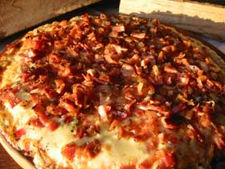

Pizza
Pizza
Pizza é uma preparação culinária que consiste em um disco de massa fermentada de farinha de
trigo, regado com molho de tomates e coberto com ingredientes variados que normalmente incluem algum tipo de
queijo, carnes preparadas ou defumadas e ervas, normalmente orégano ou manjericão, tudo assado em forno.
Alguns tipos de sabores.
A variedade de coberturas que se pode colocar sobre uma pizza é quase infinita, entretanto, algumas preparações
são tradicionais e têm fiéis seguidores:
 Margherita
Margherita Mussarela
Mussarela Portuguesa
Portuguesa Calabresa
Calabresa Pepperoni
Pepperoni Quatro queijos
Quatro queijos- Bacon
Fontes
- http://pt.wikipedia.org/wiki/Pizza
- http://www.pizza.it
- http://en.wikipedia.org/wiki/History_of_pizza
www.pizzaonline.com.br